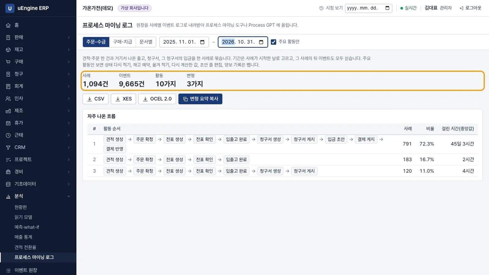
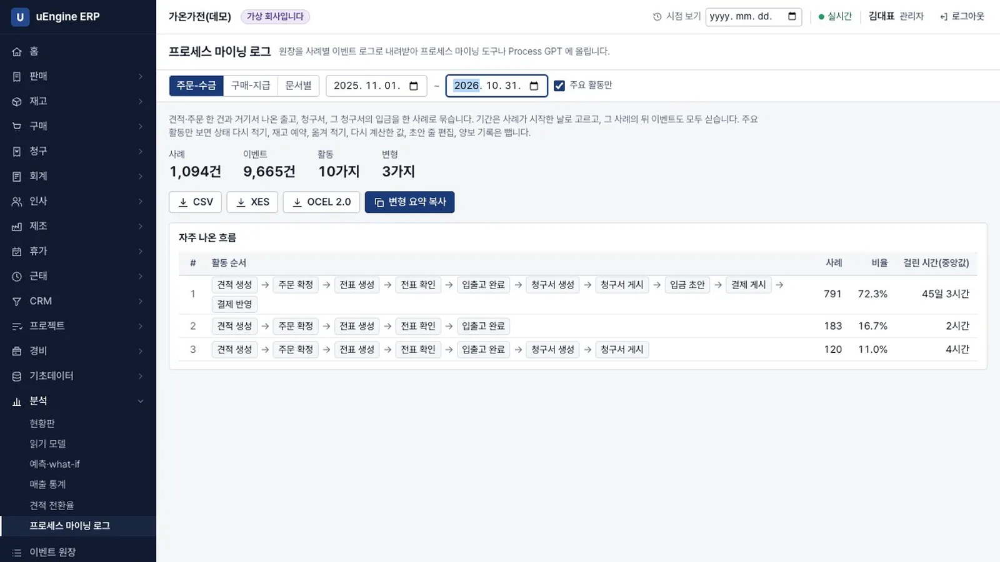
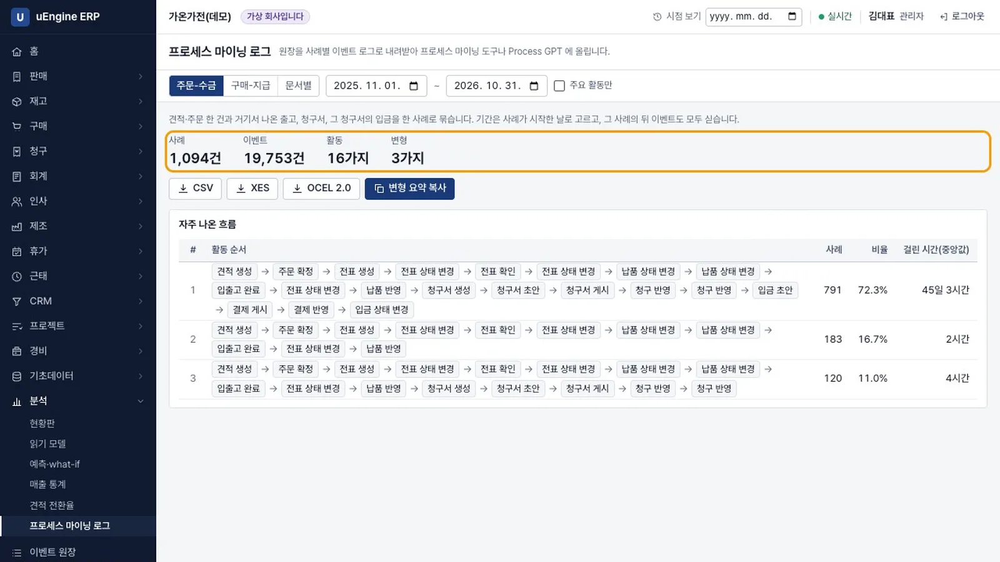
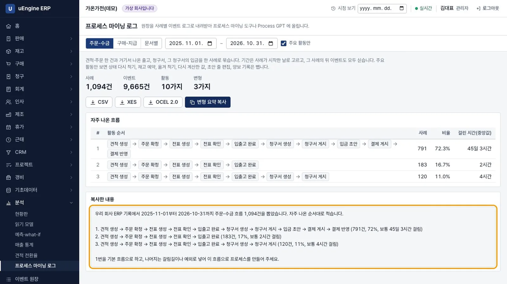
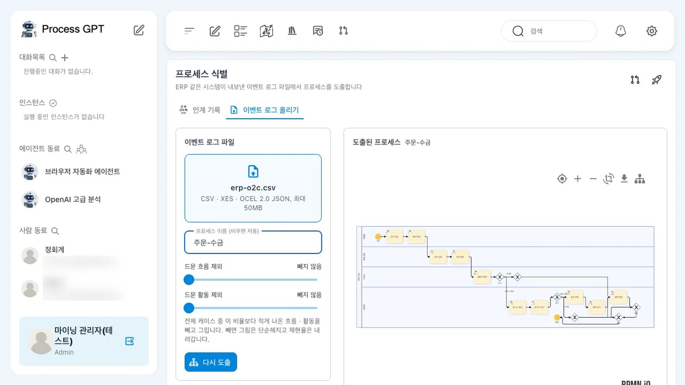
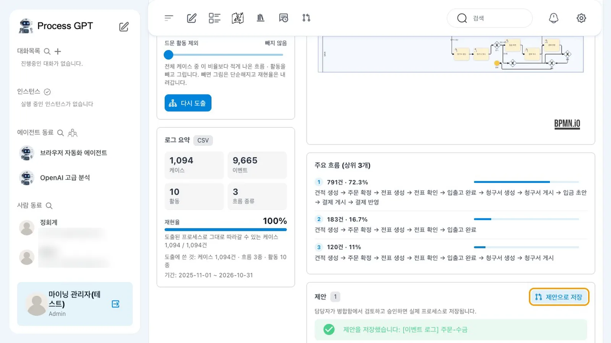
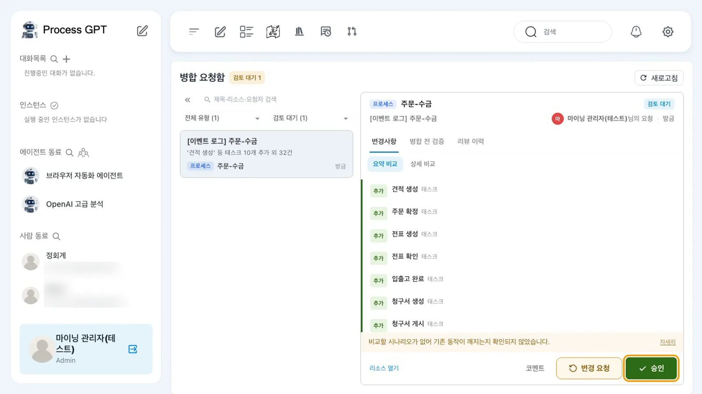

원장에는 일어난 일이 순서대로 쌓여 있습니다. 이 기록을 주문별 흐름으로 묶어 CSV, XES, OCEL 2.0 파일로 내보냅니다. Process GPT에 올리면 언어 모델 없이 BPMN을 만듭니다. 이렇게 만든 프로세스는 제안으로 저장되고 검토와 승인을 거칩니다.
무엇을 · 왜#
프로세스 마이닝은 주문 한 건이 실제로 어떤 순서로 처리됐는지를 기록에서 찾아냅니다. 상태 기반 데이터에서는 변경 이력 표를 따로 뽑아 일어난 일을 다시 맞춰 봐야 합니다. 이벤트 소싱에서는 원장에 그 기록이 이미 있습니다.
| 사례 묶음 | 한 사례에 들어가는 것 |
|---|---|
| 주문-수금 | 견적·주문 한 건, 거기서 나온 출고, 청구서, 그 청구서의 입금 |
| 구매-지급 | 구매 주문 한 건, 거기서 나온 입고, 공급사 청구서, 그 청구서의 지급 |
| 문서별 | 문서 하나가 한 사례입니다. 문서 유형을 고를 수 있습니다 |
| 파일 | 쓰는 곳 |
|---|---|
| CSV | 사례, 활동, 시각, 행위자를 한 줄씩 기록. 대부분의 프로세스 마이닝 도구와 표 계산 프로그램 |
| XES | 프로세스 마이닝 표준(IEEE 1849) 형식 |
| OCEL 2.0 | 한 이벤트가 여러 문서에 걸쳐 있어도 그대로 담는 객체 중심 형식 |
- 주요 활동만(기본으로 켜짐)은 상태 다시 적기, 재고 예약, 다시 계산한 합계, 확정 전 줄 편집 같은 기록을 뺍니다. 되돌리기와 보상은 남깁니다. 실제 업무에서 다시 한 작업이기 때문입니다.
- 활동 이름은 이벤트 원장 화면과 같은 한국어입니다.
- 볼 수 없는 문서는 사례에 들어가지 않습니다. 영업 역할만 있으면 같은 주문에서도 입금 단계는 보이지 않고 청구서의
결제 반영까지만 보입니다.
먼저 알아 둘 것
- 5장처럼 3년 치 기록이 있는 가상 회사(가온가전)를 씁니다. 숫자는 모두 지어낸 것입니다.
- 기간은 사례가 시작한 날을 기준으로 고릅니다. 그 사례에서 이후에 일어난 이벤트도 모두 담습니다.
- Process GPT의 이벤트 로그 올리기는 아직 기능 브랜치에 있으며 정식 배포 전입니다. 녹화는 시험 테넌트와 시험 계정으로 했고, 사람 목록의 메일 주소는 흐리게 가렸습니다.
따라 하기#
관리자(김대표)로 로그인해 시작합니다.
- 사례 고르기. 분석 → 프로세스 마이닝 로그를 엽니다. 주문-수금을 고르고 기간을
2025-11-01~2026-10-31로 정합니다. 사례1,094건, 이벤트9,665건, 활동10가지, 변형3가지가 나옵니다.
사례 고르기 - 자주 나온 흐름 보기. 견적 생성부터 결제 반영까지 이어진 흐름이 791건(72.3%)이고 처리 시간의 중앙값은 45일 3시간입니다. 입출고 완료에서 멈춘 흐름이 183건(16.7%), 청구서 게시에서 멈춘 흐름이 120건(11.0%)입니다.

자주 나온 흐름 - 주요 활동만 끄기. 주요 활동만을 끄면 이벤트가
19,753건, 활동이16가지가 됩니다. 프로세스를 볼 때는 다시 켭니다.
모든 활동 - 파일 받기. CSV, XES, OCEL 2.0을 누르면
erp-o2c-2025-11-01-2026-10-31.csv처럼 파일 이름에 사례 묶음과 기간이 들어갑니다. - 변형 요약 복사. 변형 요약 복사를 누르면 자주 나온 흐름을 쉬운 말로 복사합니다. 아래 복사한 내용에서도 볼 수 있습니다. 코드나 ID가 없어서 Process GPT의 프로세스 만들기 대화에 그대로 붙여 넣을 수 있습니다.

변형 요약 복사 - Process GPT에 올리기. Process GPT에서 프로세스 식별 → 이벤트 로그 올리기를 엽니다. 프로세스 이름에
주문-수금을 적고, 받은 CSV를 점선 칸에 끌어다 놓습니다.이벤트 로그 올리기 - 도출된 프로세스 보기. 1초 안에 BPMN이 그려집니다. 로그 요약은 케이스
1,094, 이벤트9,665, 활동10, 흐름 종류3, 재현율100%입니다. 출고나 청구에서 멈춘 주문이 있어 이후 단계는 건너뛸 수 있는 묶음으로 나옵니다.
도출된 프로세스 - 제안으로 저장. 제안으로 저장을 누르고 창에서 제안을 누릅니다.
제안을 저장했습니다가 뜨고 제안 수가1이 됩니다. 아직 프로세스 정의로 등록되지는 않습니다.
제안으로 저장 - 병합 요청함. 병합 요청함에
[이벤트 로그] 주문-수금이 검토 대기로 올라와 있습니다. 추가될 태스크를 확인하고 승인하면 실제 프로세스가 됩니다.
병합 요청함
확인 문제#
Process GPT가 언어 모델로 그림을 만드나요?
아니요. 사례마다 활동 순서를 모아 어떤 활동 바로 뒤에 어떤 활동이 이어졌는지 셉니다. 이를 바탕으로 귀납적 마이너가 BPMN을 만듭니다. 같은 로그를 넣으면 언제나 같은 그림이 나옵니다. 모든 사례를 그 그림대로 따라갈 수 있는지(재현율)도 함께 계산합니다.
도출한 프로세스가 바로 쓰이나요?
아니요. 먼저 제안으로 저장됩니다. 병합 요청함에서 담당자가 검토하고 승인해야 프로세스 정의가 됩니다.
권한이 다른 사람이 내보내면 파일이 달라지나요?
네. 볼 수 없는 문서는 사례에서 빠집니다. 그 문서를 거쳐야만 이어지는 문서도 빠집니다. 영업 역할만 있으면 입금 단계 없이 청구서의 결제 반영까지 나옵니다.